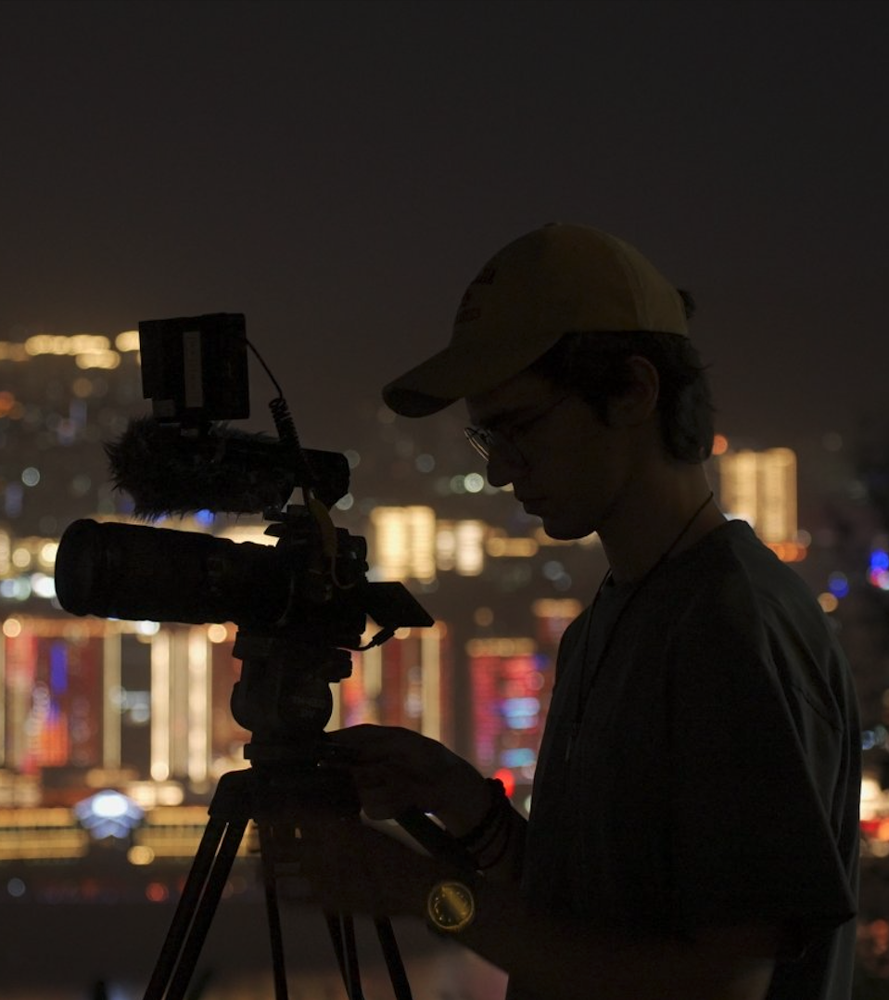

Born in Patras (2005) and a graduate of the Music High School of Patras, Konstantinos Potamianos is a filmmaker and musician currently studying Digital Arts and Cinema at the National and Kapodistrian University of Athens.
His cinematic path started early; before even graduating from high school, he directed his first documentary, "The Call of the Lighthouses" (2022), which earned multiple awards and international recognition. At the age of 17, he was selected by Camera Zizanio to participate in the Film Days (VBU - REEL EXCHANGE) workshop in Sweden and Ireland, where he directed the short documentary "Lakes with Different Faces".
His dedication to non-fiction storytelling continued through the "Crafting True Narratives" masterclass at the International Peloponnese Documentary Festival (2024), and twice through the Looking China Youth Film Project, resulting in the documentaries "The Future of Clay" and "Behind the Shadows".
In parallel, he is active as a Cinematographer in fiction shorts, including "New Mexico" (DISFF Official Selected 2025).
Apart from filmmaking, he is an accomplished Jazz Drummer. His musical background significantly influences his visual rhythm, having notably collaborated with the Athens State Orchestra (KoA) in the performance of Gershwin's arranged concerto for jazz piano trio and orchestra.
